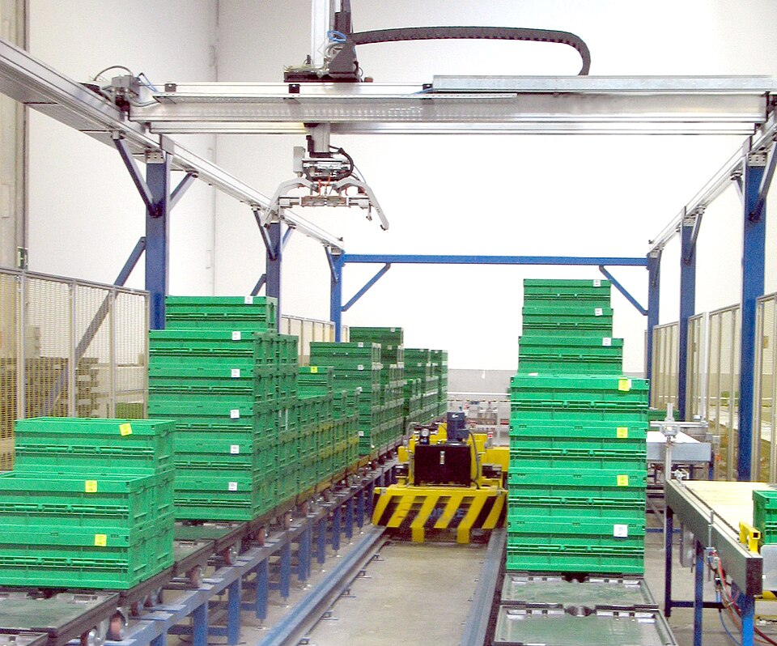

Cinemática linear
Robô Cartesiano
Três eixos lineares perpendiculares (X, Y, Z) que se movem em linha reta. A ferramenta é posicionada por coordenadas cartesianas sobre uma área retangular.
- Funcionamento
- Guias com fuso ou correia em cada eixo, movidas por motores
- Características
- Alta precisão e repetibilidade, estrutura rígida, fácil de programar
- Aplicações
- Impressão 3D, CNC, corte, pick-and-place, paletização
- IoT
- Encoders e fins de curso enviam posição/ciclos por Ethernet
Fabricantes: Yamaha (XY-X) · Igus (drylin) · Janome (JR-V)